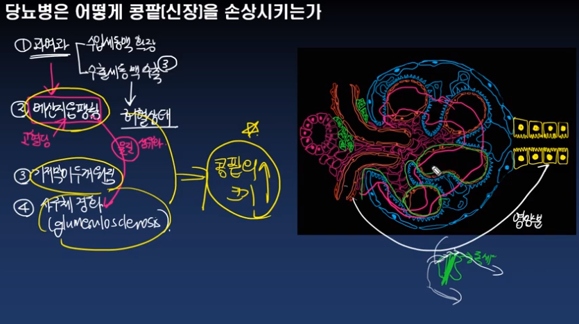
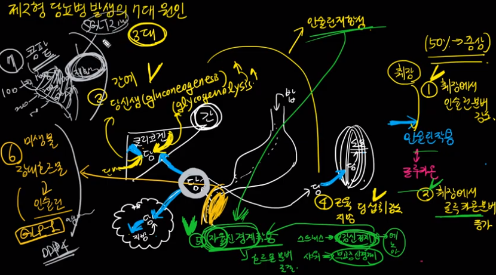

당뇨약 - DPP4저해제(자누비아, 트라젠타, 가브스 등)에 관한 이야기 youtube 당뇨약 - metformin(메포민; 다이아벡스, 글루코파지)에 관한 이야기 youtube 당뇨약 중 메포민(metformin)의 부작용 - 젖산혈증은 어떻게 일어나나 youtube 메폴민 먹고 저혈당이 온다고? - 네이버 지식백과 vs FDA youtube
조영제 CT를 찍을때 당뇨약 중 메포민을 중단해야 하는 이유는 youtube 당뇨약 - SGLT2저해제(포시가, 자디앙, 직듀오, 슈글렛)에 관한 이야기 youtube 현시점에서 가장 핫한 당뇨약 - SGLT2저해제 youtube
당뇨병환자에서 콩팥보호를 위해 승인된 유일한 약제 youtube 당뇨약 - 설폰요소제(sulfonylurea)에 관하여 youtube 당뇨약 - 아카르보스(글루코베이)에 관하여 youtube 당뇨약 - 티아졸리딘디온(액토스, 듀비에)에 관하여 youtube 당뇨약 부작용 빠른정리 youtube 기침을 일으킬 수 있는 당뇨약 youtube 새로운 당뇨약을 개발할 때 가장 중요한 것은 youtube
당뇨병 합병증, 얼마나 발생하는가? youtube 당뇨의 급성 합병증 2가지 youtube 당뇨인에서 발생할 수 있는 위험한 고혈당 - 당뇨병성케톤산증 youtube 됐고 약이나 줘 - 당뇨합병증의 치료 youtube 당뇨병의 합병증 - 발(족부)에 생길 수 있는 5가지 문제 youtube 당뇨병은 어떻게 콩팥(신장)을 손상시키는가 youtube

당뇨병이 콩팥(신장)에 무리를 주는 이유 - 과여과 youtube 당뇨병이 콩팥(신장)에 무리를 주는 이유 - 메산지움 팽창 youtube 당뇨병이 콩팥(신장)에 무리를 주는 이유 - 수출세동맥 수축 youtube 당뇨병성 말초신경병증에 관하여 youtube
당뇨병성 신경병증은 왜 미세혈관합병증인가 youtube 당뇨병성 자율신경병증에 대하여 youtube 당뇨가 오래되면 발생할 수 있는 심박수의 문제 youtube 당뇨병으로 인해 발생할 수 있는 위장장애 youtube 당뇨병성 망막병증, 혈당관리 열심히 했는데 왜 시력이 떨어질까 youtube 당뇨병성 신증과 망막병증 간의 관계 youtube
당뇨병을 처음 치료할때 염두에 두어야 할 것들 youtube 두번째 당뇨약, 고려사항 youtube 두번째 당뇨약, 언제 시작해야 하나 youtube 왜 인슐린치료를 받지 않으려고 할까 youtube 당뇨환자, 어디로 입원해야 하나 youtube 당뇨환자, 왜 금연을 해야 할까 youtube 댓글을 보고 감탄했습니다 youtube 배고픔을 관장하는 호르몬, 그렐린(ghrelin)에 관하여 youtube
인슐린은 우리 몸 안에서 무슨 일을 하는가, 지방 측면에서 youtube 인슐린은 우리 몸 안에서 무슨 일을 하는가, 포도당 측면에서 youtube 인슐린의 작용, 케톤 측면에서 youtube 인슐린저항성의 측정방법 - HOMA youtube 인슐린저항성이란 무엇이며 왜 생기는가 youtube 임신성 당뇨 - 진단과 치료 youtube 저혈당 vs 고혈당, 무엇이 위험할까 youtube 저혈당에 대한 정상인과 당뇨인의 반응 youtube 저혈당의 예방 youtube 정상적인 포도당 조절의 생리기전 youtube 처음 당뇨 진단, 심한 증상이 있을때 무슨 치료부터 해야 할까 youtube 하라는 대로 다 했는데 왜 혈당조절이 안될까 - 근본이유 youtube 한 구조의 문제는 어떻게 다른 구조의 문제를 일으키는가 youtube 혈당관리, 지금 열심히 하면 나중에 설렁설렁해도 되나 youtube 혈색소(헤모글로빈)와 당화혈색소 youtube 1.5형 당뇨병이란 youtube 1형 당뇨병의 발생원리 youtube 1형 당뇨에 동반가능한 자가면역질환 youtube 1형당뇨 처음 진단받을때의 상황 - DKA youtube 제2형 당뇨, 공복혈당이 증가하는 이유 youtube 제2형 당뇨, 식후혈당이 증가하는 이유 youtube 제2형 당뇨병 발생의 7대 원인 youtube

제2형 당뇨병 진단기준 youtube 제2형 당뇨의 자연경과 youtube 간헐적 단식, 당뇨환자에서는 하지 않았으면 youtube 간헐적 단식은 인슐린저항성을 호전시키는가 youtube 고혈압, 당뇨, 고지혈증 중 가장 문제가 되는 것은 당뇨! youtube